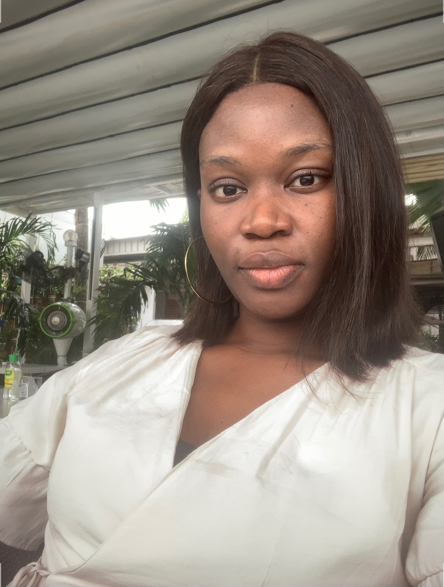

Ugwu Nkechinyere Anastasia

Summary
A highly resourceful, diligent and hardworking individual, with the ability to multi-task and deliver results, with little or no supervision.
Education
- National Youth Service Corps Discharge Certificate - 2019
- Bachelors of Science in Psychology - Nnamdi Azikiwe University (2017)
- West Africa Examination Certificate and National Examination Certificate - flourish college (2012)
Work Experience
- Vendor Relations Specialist - Jumia Nigeria.
October 2019 - December 2021
- Kept records of vendors transactions while providing advisory services to them.
- Managed the accounts of over 100 vendors assigned to me with the main aim of generating sales in their account.
- Managed 70-80 outbound calls to vendors daily, leading to 90% vendor satisfaction.
- Junior Key Account Manager - Jumia Nigeria.
January 2022 - December 2022
- Developed a solid and trusting relationship with the key accounts.
- Contributed to growing 80% NMV of key accounts and consistently achieved £70,000 monthly NMV target.
- Optimized vendor account stores monthly, by doing this, I was able to increased their visibility on FMCG.
- Sourced good deals and campaigns through the analysis of consumer trends
Skills
- Managerial skills
- Excellent communication and people skills
- Outstanding social skills
- Problem solving and analytical skills
- Teamwork and collaborative skills
- High adaptability and cognitive flexibility
Others
My Hobbies
Contact Me